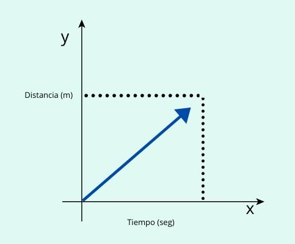
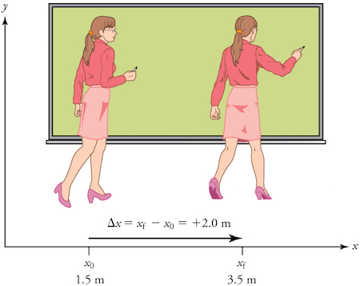
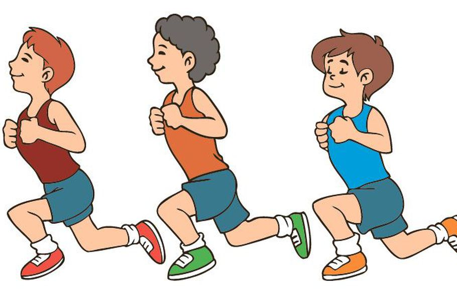

Para entender el concepto de MRU es necesario definir una serie de términos con anterioridad.
Términos clave

Posicion
El vector que une el lugar ocupado por el cuerpo con el origen del sistema de referencia. La unidad de medida en el Sistema Internacional es el metro [m].

Desplazamiento
Es el cambio de posición de un cuerpo entre dos instantes o tiempos bien definidos.

Velocidad
Es la capacidad de ocupar espacios con todo nuestro cuerpo o con cualquiera de sus segmentos en el menor tiempo posible.
Ahora bien, se dice que el movimiento rectilíneo uniforme (MRU) es el movimiento que describe un cuerpo o partícula a través de una línea recta a velocidad constante.
Las formulas usadas en el MRU son las siguientes:
| Fórmula | Número | Observación |
|---|---|---|
| 1 | d = v*t | Cálculo de la distancia en cualquier tiempo |
| 2 | v = d/t | Cálculo de la velocidad en cualquier tiempo |
| 3 | t = d/v | Calculo del tiempo demorado en llegar a determinada distancia |
A continuación un programa para calcular la velocidad de un móvil.
| Distancia (m) | Tiempo (s) | Velocidad calculada (m/s) |
|---|---|---|